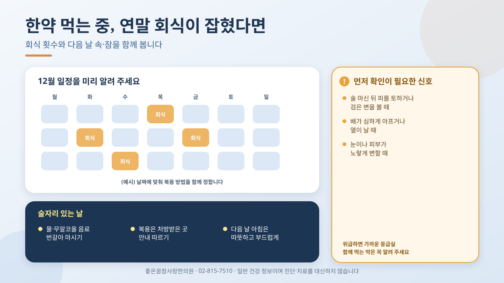

한약을 드시는 동안에는 술을 줄이거나 피하도록 권하는 경우가 많고, 처방 내용과 몸 상태에 따라 달라집니다. 회식 일정이 잡히면 미리 알려 주시면 복용 시간과 방법을 함께 정할 수 있습니다.
여쭙는 것
- 이번 달 회식이나 모임이 몇 번쯤 잡혀 있나요?
- 평소 한 번에 술을 얼마나 드시나요?
- 한약은 하루 중 언제 드시고 계신가요?
생활에서 해 볼 것
- 회식 일정이 잡히면 한의원에 미리 알려 복용 방법 상의하기
- 술자리에서는 물이나 무알코올 음료를 번갈아 마시기
- 술 마신 날 한약을 어떻게 할지는 처방받은 곳의 안내 따르기
한의원에서 함께 살필 것
- 회식이 잦아 속이 불편하고 잠이 얕아진 경우, 식사와 잠의 리듬을 함께 살핍니다.
- 한약 복용 중 술자리를 피하기 어려운 경우, 일정에 맞춰 복용 시간과 방법을 함께…
- 연말 모임 뒤 몸이 무겁고 피곤한 경우, 회복 리듬을 함께 살핍니다.
먼저 확인이 필요한 신호
- 술을 마신 뒤 피를 토하거나 검은 변을 본 경우
- 배가 심하게 아프거나 열이 나는 경우
- 눈이나 피부가 노랗게 변한 경우

12월이 되면 송년회와 회식이 줄줄이 잡힙니다. 한약을 드시는 중인 분들은 "술자리를 다 빠질 수도 없고 어떡하죠?" 하고 묻곤 합니다. 노량진과 상도동 일대 직장인들께 특히 자주 듣는 질문인데, 미리 이야기해 주시면 일정에 맞춰 방법을 함께 찾을 수 있습니다.
왜 이런 불편이 생길 수 있나요
- 술은 속을 자극하고 잠을 얕게 해, 한약을 드시는 동안 살피려던 소화와 잠의 변화를 읽기 어렵게 만들 수 있습니다.
- 늦은 시간 기름진 안주와 과식이 겹치면 다음 날 속이 더부룩하고 몸이 무거워지기 쉽습니다.
- 술자리가 이어지면 식사와 잠 시각이 흐트러져 컨디션이 오르내립니다.
- 술과 함께 드시는 다른 약이 있다면 몸에 부담이 더해질 수 있습니다.

자주 하는 오해
- 한약을 먹는 동안 술자리가 있으면 한약을 아예 끊어야 한다고 여기기 쉽지만, 일정을 알려 주시면 복용 계획을 함께 조정할 수 있습니다.
- 술 마신 날 빠뜨린 한약은 다음 날 두 번 먹으면 된다고 생각하기 쉽지만, 임의로 몰아 드시지 말고 처방받은 곳에 여쭤 보세요.
- 맥주나 와인처럼 순한 술은 괜찮다고 여기는 분이 많지만, 종류보다 마시는 양과 횟수, 그날의 몸 상태를 함께 보는 편이 좋습니다.
- 숙취해소제를 먹으면 다음 날 괜찮다고 생각하기 쉽지만, 한약과 함께 드신 것이 있다면 진료 때 꼭 말씀해 주세요.
예를 들면 이런 경우입니다
- 예를 들어 한 주에 송년회가 세 번 잡힌 직장인이라면, 달력에 회식 날짜를 표시해 진료 때 보여 주시면 그 주의 복용 시간과 방법을 날짜별로 함께 정할 수 있습니다.
- 예를 들어 거래처 모임이라 술을 거절하기 어려운 분이라면, 첫 잔만 받고 이후에는 무알코올 음료나 물로 바꾸는 식으로 자리 전에 마실 양을 미리 정해 두는 방법을 써 봅니다.
- 예를 들어 회식 다음 날 아침 한약을 먹어야 할지 헷갈리는 분이라면, 몰아서 드시거나 혼자 판단해 건너뛰기보다 처방받은 곳에 전화로 여쭤 그날의 방법을 확인하세요.

먼저 이렇게 여쭙니다
- 이번 달 회식이나 모임이 몇 번쯤 잡혀 있나요?
- 평소 한 번에 술을 얼마나 드시나요?
- 한약은 하루 중 언제 드시고 계신가요?
- 술 마신 다음 날 속이나 잠이 어떻게 달라지나요?
- 술자리가 있는 날은 보통 몇 시쯤 귀가하시나요?
- 숙취해소제나 위장약을 자주 드시나요?
스스로 점검해 보세요
- 이번 달 술자리가 네 번 이상 잡혀 있다
- 술 마신 다음 날 한약을 거른 적이 있다
- 술자리가 밤 11시를 넘겨 끝나는 날이 많다
- 술 마신 다음 날 속쓰림이나 묽은 변이 생긴다
- 술 마신 날은 자다가 자주 깬다
- 숙취해소제나 위장약을 한약과 함께 드신 적이 있다
해당하는 항목이 여럿이라면 진료 때 말씀해 주시면 상담이 쉬워집니다.

일상에서 먼저 해 볼 수 있는 것
- 회식 일정이 잡히면 한의원에 미리 알려 복용 방법 상의하기
- 술자리에서는 물이나 무알코올 음료를 번갈아 마시기
- 술 마신 날 한약을 어떻게 할지는 처방받은 곳의 안내 따르기
- 늦은 시간 기름진 안주로 과식하지 않고, 다음 날 아침은 따뜻하고 부드럽게 먹기
술자리가 있는 날에는 출발 전에 밥이나 두부처럼 속을 채울 음식을 조금 먹어 두면 빈속에 술이 들어가는 일을 줄일 수 있습니다. 귀가한 뒤에는 바로 눕기보다 물을 한 컵 마시고 잠자리에 들고, 다음 날 아침은 따뜻하고 부드러운 음식으로 시작해 보세요. 술자리가 끝난 시각과 다음 날의 컨디션을 한 줄씩 적어 두면 다음 진료 때 함께 보기 좋습니다.
얼마나 지켜보고, 언제 바로 확인할까요
술자리 뒤 속이 더부룩하거나 잠이 얕은 정도라면 하루 이틀 평소 식사와 잠으로 돌아가며 지켜보되, 술자리가 이어진 주가 지나도 사흘 넘게 속이 불편하거나 한약을 드신 뒤 불편이 함께 생긴다면 다음 진료를 기다리지 말고 한의원에 알려 주세요.
반면 피를 토하거나 검은 변을 보는 경우, 배가 심하게 아프면서 열이 나는 경우, 눈이나 피부가 노랗게 변한 경우에는 지켜보지 말고 바로 응급실을 이용하세요.

한의원에서 함께 살필 수 있는 경우
- 회식이 잦아 속이 불편하고 잠이 얕아진 경우, 식사와 잠의 리듬을 함께 살핍니다.
- 한약 복용 중 술자리를 피하기 어려운 경우, 일정에 맞춰 복용 시간과 방법을 함께 정합니다.
- 연말 모임 뒤 몸이 무겁고 피곤한 경우, 회복 리듬을 함께 살핍니다.
좋은꿈참사랑한의원에서는 먼저 이번 달 일정과 술자리 횟수를 충분히 듣고, 진맥·설진·복진으로 지금 몸 상태를 살핀 뒤 처방과 복용 계획을 조정할지 함께 정합니다. 귀가 전에는 술자리가 있는 날의 복용 방법을 따로 알려 드립니다.
처음 오시면 데스크에서 기본 정보를 적고, 원장이 주된 불편과 함께 평소 술의 양과 횟수, 잠, 소화, 배변, 복용 중인 약과 영양제를 차례로 여쭙습니다. 진맥을 짚고 필요하다고 판단될 때 설진·복진을 더하며, 처방을 정할 때는 간·신장 상태도 함께 고려합니다. 연말처럼 일정이 몰리는 시기에는 회식 날짜를 알려 주시면 복용 계획에 미리 반영해 드립니다.
이렇게 기록해 오시면 상담이 쉬워집니다
- 이번 달 회식 날짜와 예상되는 술의 양
- 술 마신 다음 날의 속 상태, 대변, 잠
- 한약을 실제로 드신 시각과 빠뜨린 날
- 숙취해소제나 위장약 등 함께 드신 약
회사 일정표나 휴대전화 달력에 이미 회식 날짜가 있다면 그 화면을 그대로 보여 주셔도 됩니다. 술자리마다 마신 술의 종류와 대략의 잔 수, 끝난 시각을 한 줄씩 덧붙여 두면 다음 진료에서 몸의 변화를 함께 읽기 훨씬 쉬워집니다.

이런 증상은 먼저 확인이 필요합니다
- 술을 마신 뒤 피를 토하거나 검은 변을 본 경우
- 배가 심하게 아프거나 열이 나는 경우
- 눈이나 피부가 노랗게 변한 경우
위급하면 가까운 응급실을 이용하세요. 복용 중인 양약과 영양제, 임신·수유 여부, 알레르기는 진료 전에 꼭 알려 주시고, 양약은 처방한 의사와 상의 없이 줄이거나 끊지 않습니다.
함께 읽으면 좋은 글
- 연말 회식을 하고 나면 며칠씩 속이 불편한 이유는 무엇인가요?
- 한약을 먹는 동안 양약과 음식은 어떻게 알려 주면 되나요?
- 술 마신 다음 날 몸이 유난히 무거울 때는 무엇을 살피나요?
한눈에 보는 표
| 구분 | 핵심 |
|---|---|
| 여쭙는 것 | 이번 달 회식이나 모임이 몇 번쯤 잡혀 있나요? 평소 한 번에 술을 얼마나 드시나요? |
| 생활에서 해 볼 것 | 회식 일정이 잡히면 한의원에 미리 알려 복용 방법 상의하기 술자리에서는 물이나 무알코올 음료를 번갈아 마시기 |
| 한의원에서 함께 살필 것 | 회식이 잦아 속이 불편하고 잠이 얕아진 경우, 식사와 잠의 리듬을 함께 살핍니다. 한약 복용 중 술자리를 피하기 어려운 경우, 일정에 맞춰 복용 시간과 방법을 함께 정합니다. |
| 먼저 확인이 필요한 신호 | 술을 마신 뒤 피를 토하거나 검은 변을 본 경우 배가 심하게 아프거나 열이 나는 경우 |
자주 묻는 질문
한 잔 정도는 괜찮지 않나요?
처방과 몸 상태에 따라 다르니, 회식 전에 미리 여쭤 주시면 함께 정합니다.
회식이 많은 달에는 한약을 쉬어야 하나요?
꼭 그렇지는 않습니다. 일정을 알려 주시면 복용 계획을 함께 조정합니다.
술을 마신 날 한약을 빼먹었으면 다음 날 두 번 먹어도 되나요?
임의로 몰아 드시지 말고, 빠뜨린 날은 처방받은 곳에 연락해 안내를 받아 주세요.
송년회가 끝난 뒤 언제 다시 진료를 받으면 되나요?
정해진 날짜보다 술자리가 몰린 주가 지난 뒤 속과 잠이 어떤지 보며 정하시면 됩니다. 불편이 이어지면 일정과 상관없이 연락 주세요.
이 글은 일반적인 건강 정보이며 개인의 진단이나 치료를 대신하지 않습니다. 증상이 있거나 복용 중인 약이 있다면 진료를 통해 확인하세요. 치료 효과는 개인마다 다를 수 있습니다.
작성 기준: 일반적으로 알려져 있는 건강 정보를 참고해 정리했습니다(대표원장 감수). 증상 기록은 1~2주 동안 하루 1회, 비슷한 시간에 적어 오시면 지난 상태와 비교하기 쉽습니다.
좋은꿈참사랑한의원은 재진 때 지난번 이야기부터 이어서 여쭙니다. 진료시간과 예약은 오시는 길에서 확인하세요.
어디서 상담받을 수 있나요?
좋은꿈참사랑한의원은 서울 동작구 만양로2길 2 신성빌딩 3층·5층(서울 동작구 상도동, 7호선 상도역 3번 출구 근처)에 있습니다. 한의사 3명(이종호 대표원장, 조영기 수석진료원장, 정원영 진료원장)이 진료합니다. 진료시간은 평일 09:30~20:00(점심 13:00~14:00), 토·일·공휴일 09:30~15:00이며, 방문 전 전화로 확인을 권합니다. 예약은 네이버 예약, 카카오톡 상담, 전화 02-815-7510로 받습니다.